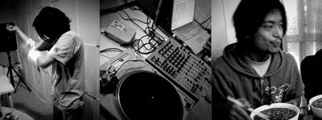

DorkbotBJ Meeting I: Friday, May 19, 2006
Venue: Studio 2 of the CEMC, Central Conservatory of Music
Presenter:
Daito Manabe: Turntablist, videos/sound designer, programmer.
Content：
1. Signal from Muscle sensor -> Radio wave by Transmitter & Converter -> Remote receiver linked to computer -> To control MAX/MSP program
2. Turntable & MAX/MSP
To see more about meeting 1: Gallery 1
To know more about Daito Manabe: www.daito.ws
DorkbotBJ首次聚会记录：2006年5月19日
地点：中央音乐学院电子音乐中心2号实验室
展示者：
Daito Manabe（真锅大度）：来自日本的音频/视频艺术家。使用MAX/MSP，Turntable（唱机）与肌肉传感器进行创作及表演。
展示内容：
1.肌肉传感器发出信号 -> 转换器将信号转为无线电波 -> 与电脑相连的接收器进行接收 -> 控制MAX/MSP程序参数
2. Turntable & MAX/MSP， 用turntable控制MAX/MSP程序
更多关于dorkbotbj首次聚会：Gallery 1
更多关于Daito Manabe：www.daito.ws